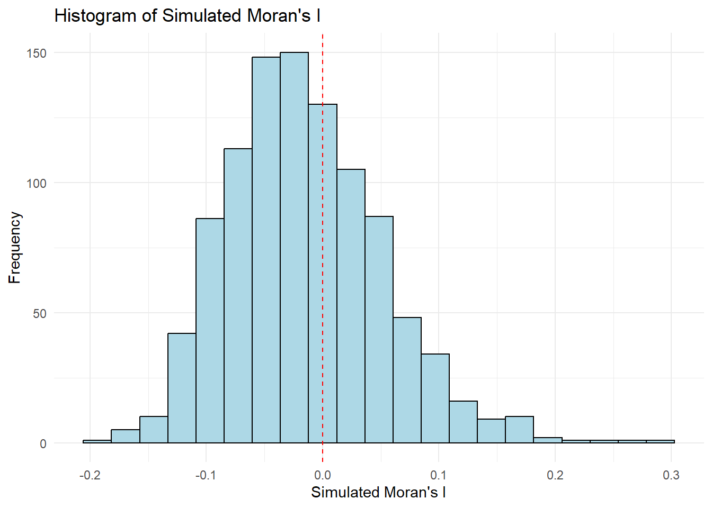
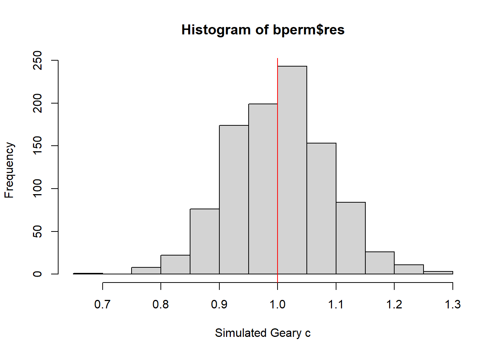

pacman::p_load(sf, spdep, tmap, tidyverse)
set.seed(1234)Hands On Exercise 5- Global Measures of Spatial Autocorrelation
5 Introduction
We now focus on Global Measures of Spatial Autocorrelation (GMSA) with the help of the spdep package. Through this exercise we:
compute Global Spatial Autocorrelation (GSA) statistics by using appropriate functions of spdep package,
plot Moran scatterplot,
compute and plot spatial correlogram using appropriate function of spdep package.
provide statistically correct interpretation of GSA statistics.
5.1 Objective
In spatial policy, a key objective for local governments and urban planners is to promote balanced development across the province. In this study, our goal is to apply appropriate spatial statistical methods to assess whether development is evenly distributed geographically in Hunan Province, People’s Republic of China, using GDP per capita as a development indicator.
If we find that development is not evenly distributed, our next step will be to investigate whether there are signs of spatial clustering. Should clustering be present, we will then identify the locations of these clusters. Through this exercise, we aim to uncover the spatial patterns of development in the province.
5.2 Data and Packages
For this exercise, we have the following two datasets:
Hunan province administrative boundary layer at county level. This is a geospatial data set in ESRI shapefile format.
Hunan_2012.csv: This csv file contains selected Hunan’s local development indicators in 2012.
The packages used are as follows:
sf: Provides simple features support for handling and analyzing spatial vector data in R.spdep: A package for spatial dependence and spatial regression analysis, particularly for handling spatial weights.tmap: A flexible visualization package for thematic maps, supporting both static and interactive mapping in R.tidyverse: A collection of R packages designed for data science, emphasizing data manipulation, visualization, and functional programming.
We import these packages into our environment using the code chunk below.
5.3 Importing the Data
We will use the st_read() function of the sf package to import the Hunan Shapefile into our environment.
hunan <- st_read(dsn = "data/geospatial",
layer = "Hunan")Reading layer `Hunan' from data source
`C:\arjxn11\ISSS626-GAA\Hands-on_Ex\Hands-on_Ex05\data\geospatial'
using driver `ESRI Shapefile'
Simple feature collection with 88 features and 7 fields
Geometry type: POLYGON
Dimension: XY
Bounding box: xmin: 108.7831 ymin: 24.6342 xmax: 114.2544 ymax: 30.12812
Geodetic CRS: WGS 84We will use the read_csv() function of the readr package to import the Hunan_2012 data file.
hunan2012 <- read_csv("data/aspatial/Hunan_2012.csv")5.3.1 Performing relational join
We will update the attribute table of Hunan’s SpatialPolygonsDataFrame with the attribute fields of the hunan2012 data-frame. We can do this by using the left_join() function of the dplyr package.
hunan <- left_join(hunan,hunan2012) %>%
select(1:4, 7, 15)5.4 Visualizing Regional Development Indicator
We are now going to prepare a basemap and a choropleth map to visualize the distribution of GDPPC 2012 by using the qtm() function of the tmap package.
equal <- tm_shape(hunan) +
tm_fill("GDPPC",
n = 5,
style = "equal") +
tm_borders(alpha = 0.5) +
tm_layout(main.title = "Equal interval classification")
quantile <- tm_shape(hunan) +
tm_fill("GDPPC",
n = 5,
style = "quantile") +
tm_borders(alpha = 0.5) +
tm_layout(main.title = "Equal quantile classification")
tmap_arrange(equal,
quantile,
asp=1,
ncol=2)
5.5 Global Measures of Spatial Autocorrelation
We now focus on computing Global Spatial Autocorrelation Statistics and conducting tests for Complete Spatial Randomness for Global Spatial Autocorrelation.
Spatial autocorrelation is an important concept in spatial statistics because it highlights the degree to which geographic proximity influences the distribution of a variable across a region. Moran’s I and Geary’s C are commonly used to measure spatial autocorrelation.
5.5.1 Computing Contiguity Spatial Weights
Before computing the global spatial autocorrelation statistics, we need to construct a spatial weights of the study area, the spatial weights are used to define the neighbourhood relationships between the geographical units (i.e. county) in the study area.
We now implement the poly2nb() function of the spdep package to compute contiguity weight matrices for the study area selected.
Using this function, we are able to build a ‘neighbors list’ based on regions with contiguous boundaries.
In this function, we will pass an argument, ‘queen’, that can be set as either TRUE (default) or FALSE. If the ‘queen’ argument is not explicitly set to FALSE, the function returns a list of first order neighbors using the Queen criteria.
You may refer to the spdep package documentation here to learn more about its functions and arguments.
wm_q <- poly2nb(hunan,
queen=TRUE)
summary(wm_q)Neighbour list object:
Number of regions: 88
Number of nonzero links: 448
Percentage nonzero weights: 5.785124
Average number of links: 5.090909
Link number distribution:
1 2 3 4 5 6 7 8 9 11
2 2 12 16 24 14 11 4 2 1
2 least connected regions:
30 65 with 1 link
1 most connected region:
85 with 11 linksFrom the output above, we can infer that there are 88 area units in total in Hunan. The most connected area unit has 11 neighbors. There are two area units with just 1 neighbor, while 24 area units have 5 neighbors.
5.5.2 Row-Standardized Weights Matrix
We now need to assign weights to each neighboring polygon. We use equal weights (style=“W”), where each neighboring polygon is assigned a weight of 1 divided by the number of neighbors.
This means each neighboring county’s weight is calculated as 1/(# of neighbors), and these weights are then used to sum the weighted income values.
While this method is intuitive for summarizing neighbors’ values, it has a drawback: polygons at the edges of the study area may rely on fewer neighbors, potentially skewing the spatial autocorrelation results.
rswm_q <- nb2listw(wm_q,
style="W",
zero.policy = TRUE)
rswm_qCharacteristics of weights list object:
Neighbour list object:
Number of regions: 88
Number of nonzero links: 448
Percentage nonzero weights: 5.785124
Average number of links: 5.090909
Weights style: W
Weights constants summary:
n nn S0 S1 S2
W 88 7744 88 37.86334 365.9147The nb2listw() function requires an input of class nb, representing a neighborhood object. The function’s two key arguments are style and zero.policy.
The
styleargument defines how the weights are calculated. It can take several values:"B": Binary coding, where weights are either 0 or 1."W": Row-standardized, where the sum of weights across all neighbors equals 1."C": Globally standardized, where the sum of weights across all neighbors equals the total number of neighbors."U": A variation of"C", where weights are normalized by the number of neighbors."S": A variance-stabilizing scheme proposed by Tiefelsdorf et al. (1999), which adjusts weights based on the number of neighbors.
The
zero.policyargument, when set toTRUE, handles regions with no neighbors by assigning them a weight vector of zero length. This results in a spatial lag value of zero for regions without neighbors, which may or may not be a suitable assumption depending on the context. For such regions, the spatially lagged value is computed as the sum of the products of a zero vector with any numerical vectorx, effectively setting the lagged value to zero for those regions.
5.6 Global Measures of Spatial Autocorrelation: Moran’s I
We now conduct Moran’s I statistics testing by using the moran.test() function of the spdep package.
Statistical tests are conducted at a 5% significance level.
5.6.1 Maron’s I test
The hypotheses for the test are as follows:
H0: Regions with similar GDP Per Capita are randomly distributed.
H1: Regions with similar GDP Per Capita are not randomly distributed and exhibit spatial clustering.
moran.test(hunan$GDPPC,
listw=rswm_q,
zero.policy = TRUE,
na.action=na.omit)
Moran I test under randomisation
data: hunan$GDPPC
weights: rswm_q
Moran I statistic standard deviate = 4.7351, p-value = 1.095e-06
alternative hypothesis: greater
sample estimates:
Moran I statistic Expectation Variance
0.300749970 -0.011494253 0.004348351 From the output above, we can infer the following:
The p-value (1.095e-06)<0.05, indicating that the observed spatial autocorrelation is statistically significant.
Moran’s I statistic: The observed value of 0.3007 indicates positive spatial autocorrelation, meaning that regions with similar GDP Per Capita are more likely to be located near each other.
Since Moran’s I Statistic is significantly greater than what we would expect in a randomly distributed region. There is significant evidence to reject H0 and conclude that there is indeed spatial clustering with regards to GDP Per Capita in Hunan.
5.6.2 Computing Monte Carlo Moran’s I
We now implement the moran.mc() function of the spdep package. In this scenario, we will run 1000 simulations.
bperm= moran.mc(hunan$GDPPC,
listw=rswm_q,
nsim=999,
zero.policy = TRUE,
na.action=na.omit)
bperm
Monte-Carlo simulation of Moran I
data: hunan$GDPPC
weights: rswm_q
number of simulations + 1: 1000
statistic = 0.30075, observed rank = 1000, p-value = 0.001
alternative hypothesis: greaterBased on the above output, p-value (0.001)<0.05, thus we can reject the null hypothesis at a 5% significance level and conclude that there is indeed spatial clustering.
5.6.3 Visualizing Monte Carlo Moran’s I
We can visualize the test statistics obtained from the simulation above by implementing the hist() and abline() functions of R graphics.
We first calculate the mean and variance, and obtain the summary statistics.
mean(bperm$res[1:999])[1] -0.01504572var(bperm$res[1:999])[1] 0.004371574summary(bperm$res[1:999]) Min. 1st Qu. Median Mean 3rd Qu. Max.
-0.18339 -0.06168 -0.02125 -0.01505 0.02611 0.27593 hist(bperm$res,
freq=TRUE,
breaks=20,
xlab="Simulated Moran's I")
abline(v=0,
col="red") 
From the above, we can infer that over half of all simulations indicate a negative value for Moran’s I statistic. Generally, a negative value indicates that dissimilar regions are located next to each other. (i.e: regions with dissimilar GDP Per Capita are located next to each other)
We can also use ggplot2 package to plot the above.
data <- data.frame(simulated_moran = bperm$res)
ggplot(data, aes(x = simulated_moran)) +
geom_histogram(binwidth = (max(data$simulated_moran) - min(data$simulated_moran)) / 20,
fill = "lightblue", color = "black") +
geom_vline(xintercept = 0, color = "red", linetype = "dashed") +
labs(x = "Simulated Moran's I",
y = "Frequency",
title = "Histogram of Simulated Moran's I") +
theme_minimal()
If Morans I Statistic is = 0, there is Random Spatial Distribution.
5.7 Global Measures of Spatial Autocorrelation: Geary’s C
We will implement the Geary’s C test for spatial autocorrelation by using the geary.test() function of the spdep package.
geary.test(hunan$GDPPC, listw=rswm_q)
Geary C test under randomisation
data: hunan$GDPPC
weights: rswm_q
Geary C statistic standard deviate = 3.6108, p-value = 0.0001526
alternative hypothesis: Expectation greater than statistic
sample estimates:
Geary C statistic Expectation Variance
0.6907223 1.0000000 0.0073364 For Geary;s C test:
Values less than 1 indicate positive spatial autocorrelation.
Values greater than 1 indicate negative spatial autocorrelation.
Values that are close or equal to 1 indicates no spatial autocorrelation.
5.7.1 Computing Monte Carlo Geary’s C
We implement the the geary.mc() function of the spdep package to conduct 1000 simulations.
bperm=geary.mc(hunan$GDPPC,
listw=rswm_q,
nsim=999)
bperm
Monte-Carlo simulation of Geary C
data: hunan$GDPPC
weights: rswm_q
number of simulations + 1: 1000
statistic = 0.69072, observed rank = 1, p-value = 0.001
alternative hypothesis: greaterWe can infer that there is sufficient evidence to reject the null hypothesis (as p-value (0.001)<0.05) and conclude that there is indeed Positive Spatial Autocorrelation (as statistic= 0.691.)
5.7.2 Visualizing Monte Carlo Geary’s C
mean(bperm$res[1:999])[1] 1.003309var(bperm$res[1:999])[1] 0.006955922summary(bperm$res[1:999]) Min. 1st Qu. Median Mean 3rd Qu. Max.
0.7645 0.9435 1.0044 1.0033 1.0565 1.2883 hist(bperm$res, freq=TRUE, breaks=20, xlab="Simulated Geary c")
abline(v=1, col="red") 
From the plot, we infer that out of the 1000 simulations the value of the statistic is distributed approximately normally, however generally values are close to 1 indicating a lack of spatial autocorrelation.
5.8 Spatial Correlogram
Spatial correlograms are a powerful tool for analyzing patterns of spatial autocorrelation in your data or model residuals. They illustrate how the correlation between pairs of spatial observations changes as the distance (or lag) between them increases. Essentially, they plot an index of autocorrelation, such as Moran’s I or Geary’s C, against distance.
While correlograms are not as central to geostatistics as variograms—an essential concept in that field—they offer valuable insights as an exploratory and descriptive tool. In fact, for examining spatial autocorrelation, correlograms often provide more detailed information than variograms, making them particularly useful for initial spatial data analysis.
We implement the sp.correlogram() function of the spdep package to compute a 6-lag spatial correlogram of GDP Per Capita. The global spatial autocorrelation used in Moran’s I.
The plot() of base Graph is then used to plot the output.
MI_corr <- sp.correlogram(wm_q,
hunan$GDPPC,
order=6,
method="I",
style="W")
plot(MI_corr)
The plot above may not allow us to provide complete interpretation. This is because not all autocorrelation values are statistically significant. Hence, it is important for us to examine the full analysis report by printing out the analysis results as in the code chunk below.
print(MI_corr)Spatial correlogram for hunan$GDPPC
method: Moran's I
estimate expectation variance standard deviate Pr(I) two sided
1 (88) 0.3007500 -0.0114943 0.0043484 4.7351 2.189e-06 ***
2 (88) 0.2060084 -0.0114943 0.0020962 4.7505 2.029e-06 ***
3 (88) 0.0668273 -0.0114943 0.0014602 2.0496 0.040400 *
4 (88) 0.0299470 -0.0114943 0.0011717 1.2107 0.226015
5 (88) -0.1530471 -0.0114943 0.0012440 -4.0134 5.984e-05 ***
6 (88) -0.1187070 -0.0114943 0.0016791 -2.6164 0.008886 **
---
Signif. codes: 0 '***' 0.001 '**' 0.01 '*' 0.05 '.' 0.1 ' ' 1From the output above, we infer that a majority of the time, there is indeed spatial autocorrelation in Hunan.
We implement the sp.correlogram() of spdep package is used to compute a 6-lag spatial correlogram of GDPPC. The global spatial autocorrelation used in Geary’s C. The plot() of base Graph is then used to plot the output.
GC_corr <- sp.correlogram(wm_q,
hunan$GDPPC,
order=6,
method="C",
style="W")
plot(GC_corr)
Similar to the previous step, we will print out the analysis report by using the code chunk below.
print(GC_corr)Spatial correlogram for hunan$GDPPC
method: Geary's C
estimate expectation variance standard deviate Pr(I) two sided
1 (88) 0.6907223 1.0000000 0.0073364 -3.6108 0.0003052 ***
2 (88) 0.7630197 1.0000000 0.0049126 -3.3811 0.0007220 ***
3 (88) 0.9397299 1.0000000 0.0049005 -0.8610 0.3892612
4 (88) 1.0098462 1.0000000 0.0039631 0.1564 0.8757128
5 (88) 1.2008204 1.0000000 0.0035568 3.3673 0.0007592 ***
6 (88) 1.0773386 1.0000000 0.0058042 1.0151 0.3100407
---
Signif. codes: 0 '***' 0.001 '**' 0.01 '*' 0.05 '.' 0.1 ' ' 1